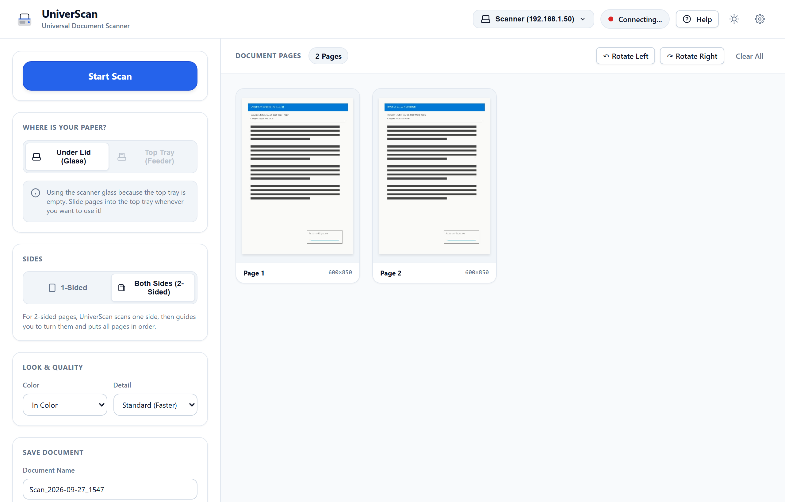
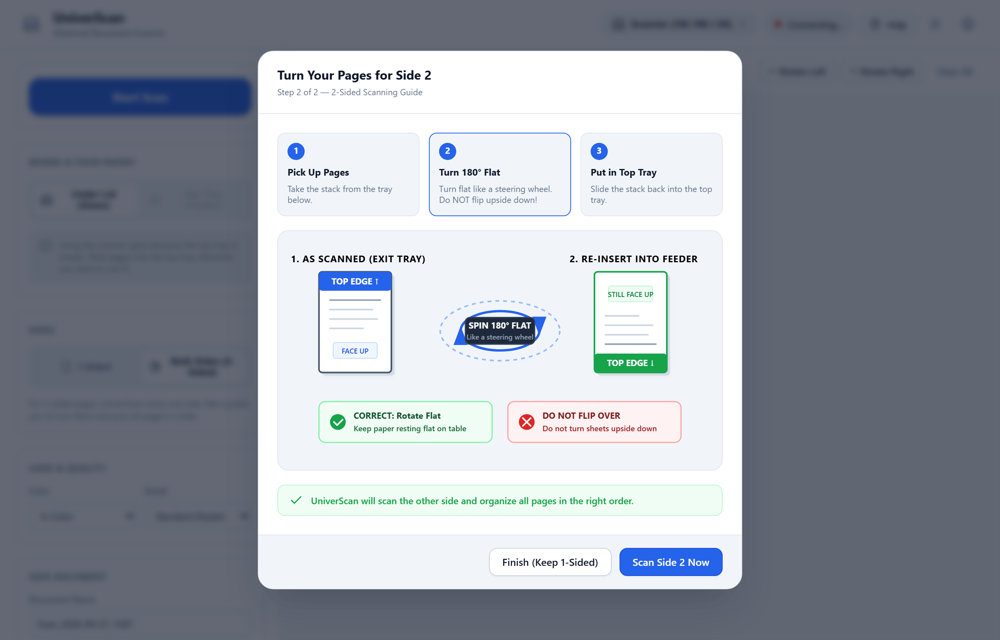
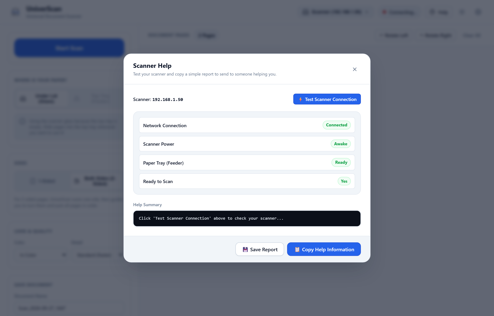
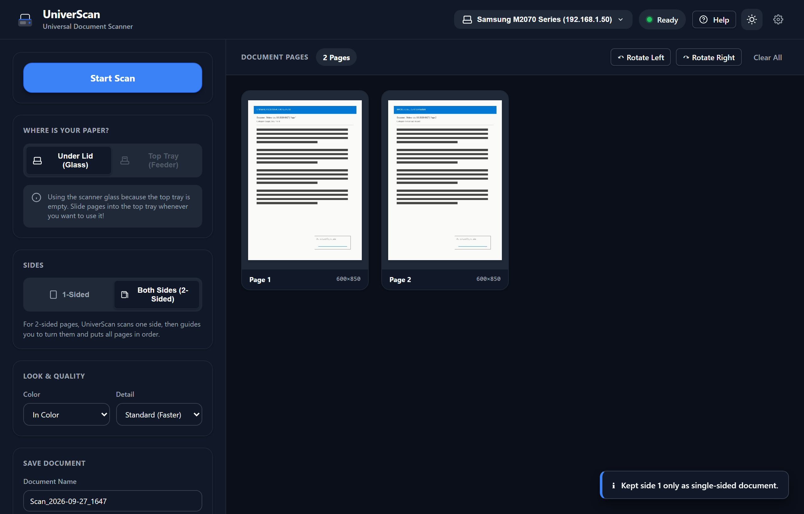

UniverScan 📄✨¶
The Simple, Universal Document Scanner for Everyone
One sober, driverless application that works with almost any network scanner in the world. Designed for kids doing homework, busy parents, and grandparents alike.

3 Simple Steps to Scan¶
Scanning shouldn't require reading a 50-page manual or choosing between 20 different technical options.
1. Put Paper In
Place your stack in the top feeder tray, or put a single page on the glass under the lid.
2. Click "Start Scan"
The scanner wakes up, starts scanning immediately, and pages appear live on your screen.
3. Click "Save as PDF"
Your document is saved neatly into your personal Documents/Scans folder with the date and time.
What Makes UniverScan Unique¶
🔄 Guided 2-Sided Scanning¶
Most home scanners only have a 1-sided feeder. UniverScan solves this with our signature Steering Wheel Guide: scan side 1, spin the stack 180° flat like a steering wheel, and scan side 2. UniverScan automatically reorders every page (1, 2, 3, 4, 5...) without any manual sorting!

💡 1-Click Problem Solver & Help¶
If your scanner isn't responding, you don't need to know anything about IP addresses or ports. Simply click Help > ⚡ Test Scanner Connection > 📋 Copy Help Information. You can paste the report directly to someone helping you or to an AI assistant to fix the issue in seconds.

🌙 Thoughtful Light & Dark Modes¶
Designed with Swiss typography principles and Apple Human Interface Guidelines. Clean, legible, high-contrast, and easy on the eyes day or night.

Universal Compatibility¶
UniverScan connects directly over your home Wi-Fi or local network without requiring manufacturer CDs or drivers:
| Brand | Compatibility Mode |
|---|---|
| Samsung & Xerox | Raw Port 9400 TCP protocol + WSD |
| HP (Hewlett-Packard) | AirScan (eSCL) & WSD Scan |
| Canon & Epson | Driverless eSCL / AirScan / Mopria |
| Brother & Lexmark | WS-Scan (WSD) & eSCL |
| Kyocera, Ricoh, OKI | Universal Web Services for Devices (WSD) |